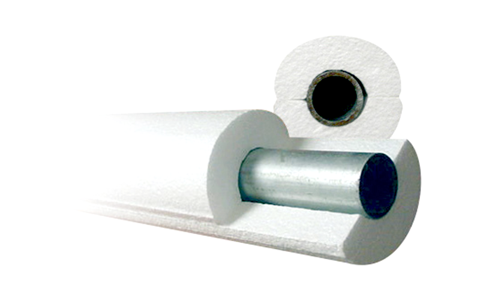
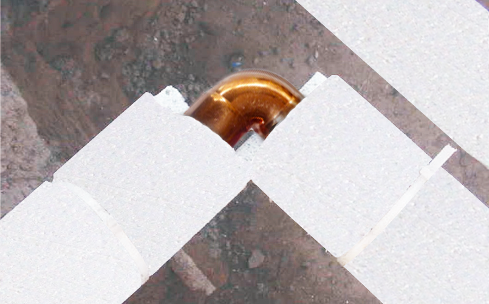
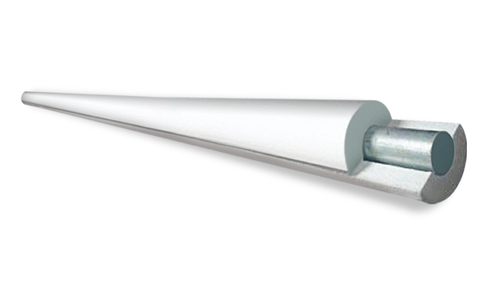

Descripción del Producto
Versátil
La versatilidad de la MEDIA CAÑA ALFATERM™ le permite ser empleada como aislante térmico en tubería de todo tipo de fluidos.
Es ampliamente utilizada en el ramo de la construcción, restaurantes y clubes deportivos que requieren mantener un nivel óptimo en la temperatura interior de cuartos y tuberías.
Principales usos
Es utilizada como aislante térmico en tuberías de agua, gases y todo tipo de fluidos.
Aplicaciones del Producto


